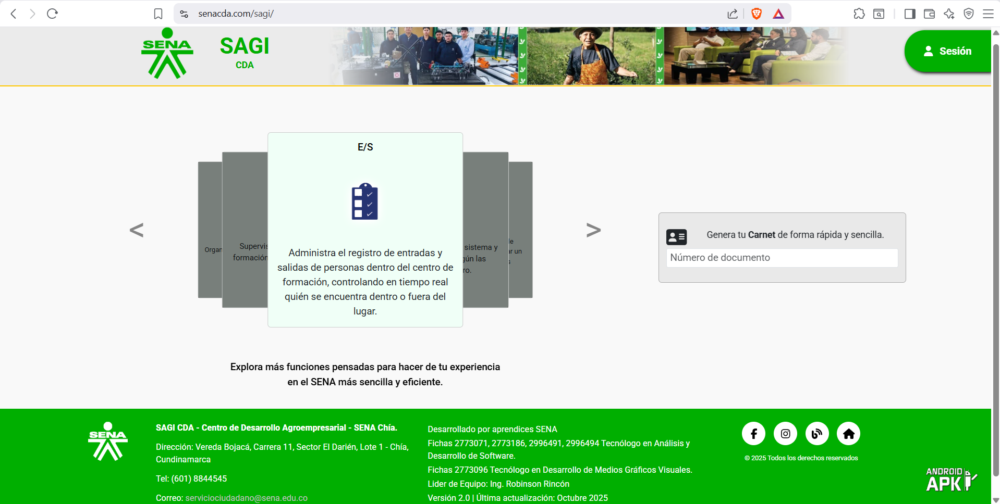
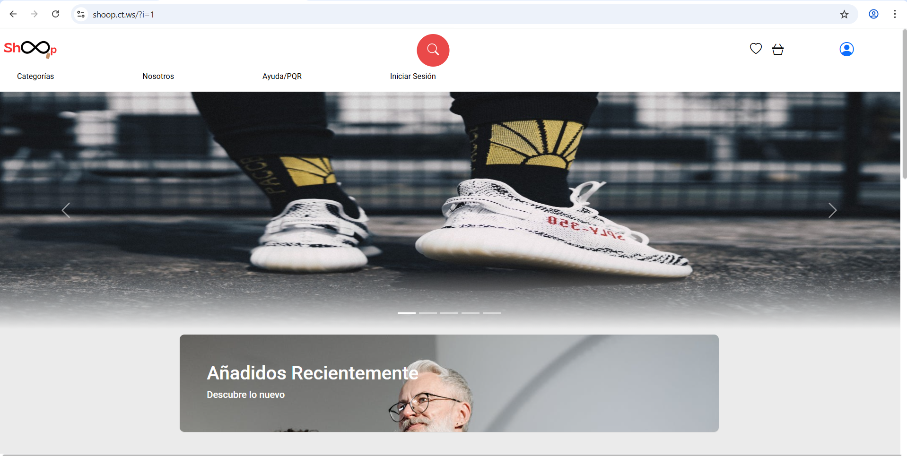

Hola, soy Dariana de la cruz 👋
Desarrolladora de Software Junior
Apasionada por el desarrollo de software y la creación de sistemas que optimicen procesos y mejoren la organización.
Ver proyectos
Apasionada por el desarrollo de software y la creación de sistemas que optimicen procesos y mejoren la organización.
Ver proyectos
Soy tecnóloga en Análisis y Desarrollo de Software, con experiencia en el desarrollo de proyectos orientados a la gestión y optimización de procesos institucionales. Participé en el desarrollo de SAGI; Un sistema enfocado en la administración de módulos/servicios del SENA, y en Shoop; Proyecto de grado enfocado en soluciones tecnológicas, orientadas a la gestión y experiencia de usuario.

Sistema desarrollado para gestionar módulos y servicios institucionales del SENA. Ficha 2773071.
Ver proyecto
Sistema CRUD desarrollado para la gestión de inventarios y administración de ventas de productos, orientado a optimizar el control de información, registro de productos y seguimiento de procesos comerciales.
Ver proyecto